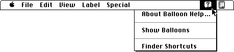

About the Help Manager
You can use the Help Manager to provide help for these interface features of your application:Providing help balloons for menus, dialog boxes, or alert boxes is quite simple, because you need only to create resources; you don't have to alter any of your existing code. The Help Manager automatically sizes, positions, and draws the help balloon and its help message for you. It is equally simple to provide help balloons for a window whose contents don't change location within its content area.
- menu titles and menu items
- dialog boxes and alert boxes
- windows, including any object in the frame or content area
- icons for any desktop objects other than documents
- other application-defined areas
It takes a little more work to provide help balloons for windows in your application that contain objects that are dynamic or that change their position within the content areas of their windows. You provide Balloon Help assistance for these objects by tracking the cursor yourself and using Help Manager routines to display help balloons. You can let the Help Manager remove help balloons, or your application can determine when to remove help balloons.
The user turns on Balloon Help online assistance by choosing Show Balloons from the Help menu, which is shown in Figure 3-1. Once the user chooses Show Balloons, help is enabled for all applications. The Help menu appears to the right of all your menus and to the left of the Application menu (and to the left of the Keyboard menu if a non-Roman script system is installed). Users can turn on Balloon Help assistance even when your application presents an alert box or a modal dialog box, because the Help menu is always enabled.
Figure 3-1 The Help menu for the Finder

When Balloon Help assistance is enabled, the Help Manager displays any help balloons for the current application whenever the user moves the cursor over a rectangular area that has a help balloon associated with it. For those balloons defined in Help Manager resources, the Help Manager automatically tracks the cursor and generates the shape and calculates the position for the help balloon. The Help Manager removes the help balloon when the cursor is no longer located over the associated area.The Help Manager provides a default help balloon for inactive windows and displays default help balloons for the title bar and other parts of the active window. The Help Manager also displays default help balloons for other standard features of an application's user interface. "Default Help Balloons for Menus, Windows, and Icons" beginning on page 3-12 describes the default help balloons. (Though you probably won't want or need to change the messages in these default balloons, you have the ability to do so, as described in "Overriding Other Default Help Balloons" on page 3-80.) The Help Manager displays the default help balloons for your application whenever Balloon Help assistance is enabled, even if your application does not explicitly use or create help balloons.
Help balloons do not interfere with your application. Because the Help Manager can display a balloon whether the mouse button is down or up, the user can still click and double-click to use the normal features of your application.
When the user chooses Hide Balloons from the Help menu, the Help Manager removes any visible help balloon and stops displaying help balloons until Balloon Help assistance is enabled again.
Subtopics
- How the Help Manager Displays Balloons
- Default Help Balloons for Menus, Windows, and Icons
- About BalloonWriter